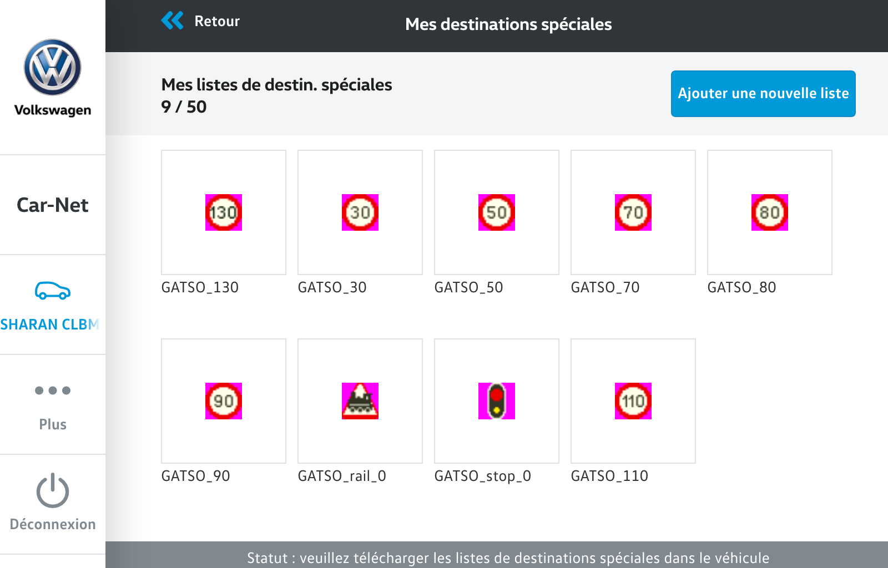

Daily it gives the latest set of speed cameras on the EU.
| BE | CH | DE | ES | FR | GB | IT | LU | NL | PL | PT | SE | ||
|---|---|---|---|---|---|---|---|---|---|---|---|---|---|
| !30 | ✔︎ | ✔︎ | ✔︎ | ✔︎ | ✔︎ | ✔︎ | ✔︎ | ✔︎ | ✔︎ | ✔︎ | 2968 | ||
| !40 | ✔︎ | ✔︎ | ✔︎ | ✔︎ | ✔︎ | ✔︎ | ✔︎ | ✔︎ | 997 | ||||
| !50 | ✔︎ | ✔︎ | ✔︎ | ✔︎ | ✔︎ | ✔︎ | ✔︎ | ✔︎ | ✔︎ | ✔︎ | ✔︎ | 6472 | |
| !60 | ✔︎ | ✔︎ | ✔︎ | ✔︎ | ✔︎ | ✔︎ | ✔︎ | ✔︎ | ✔︎ | ✔︎ | 734 | ||
| !70 | ✔︎ | ✔︎ | ✔︎ | ✔︎ | ✔︎ | ✔︎ | ✔︎ | ✔︎ | ✔︎ | ✔︎ | ✔︎ | ✔︎ | 2769 |
| !80 | ✔︎ | ✔︎ | ✔︎ | ✔︎ | ✔︎ | ✔︎ | ✔︎ | ✔︎ | ✔︎ | ✔︎ | ✔︎ | 2408 | |
| !90 | ✔︎ | ✔︎ | ✔︎ | ✔︎ | ✔︎ | ✔︎ | ✔︎ | ✔︎ | ✔︎ | ✔︎ | 1543 | ||
| !100 | ✔︎ | ✔︎ | ✔︎ | ✔︎ | ✔︎ | ✔︎ | ✔︎ | ✔︎ | ✔︎ | ✔︎ | 621 | ||
| !110 | ✔︎ | ✔︎ | ✔︎ | ✔︎ | ✔︎ | 299 | |||||||
| !120 | ✔︎ | ✔︎ | ✔︎ | ✔︎ | ✔︎ | ✔︎ | ✔︎ | 512 | |||||
| !130 | ✔︎ | ✔︎ | 215 | ||||||||||
| !stop | ✔︎ | ✔︎ | ✔︎ | ✔︎ | ✔︎ | ✔︎ | ✔︎ | ✔︎ | 6767 | ||||
| !rail | ✔︎ | 78 | |||||||||||
| !tunnel | ✔︎ | ✔︎ | ✔︎ | 155 | |||||||||
| 24794 | 24403 | 26245 | 22978 | 23519 | 24248 | 25793 | 4312 | 26090 | 18512 | 18027 | 18811 |
Activate only the POI near you.
Their name on your GPS is like
!110 - DE FR IT NL SE.
-
GPX (accurate)
- Garmin (embeded into VolksWagen, MAN, Skoda, Seat, etc.)
- Mercedes
- Volvo
-
CSV (verbose)
- Garmin (embeded into VolksWagen, MAN, Skoda, Seat, etc.)
- Navman
-
OV2 (minimalist)
- TomTom (embeded into Fiat, Peugeot, etc.)

installation
4 methods:
explanations
VW Discover Media
- press the button
- insert the SD Card into the second card connector of your GPS
- select
- select
- select
- waiting for then press *mise à jour* then press *suivant*
- while it terminated, press the button
- select
- select
- select
- scroll down to GATSO and check which POI you want
- enjoy